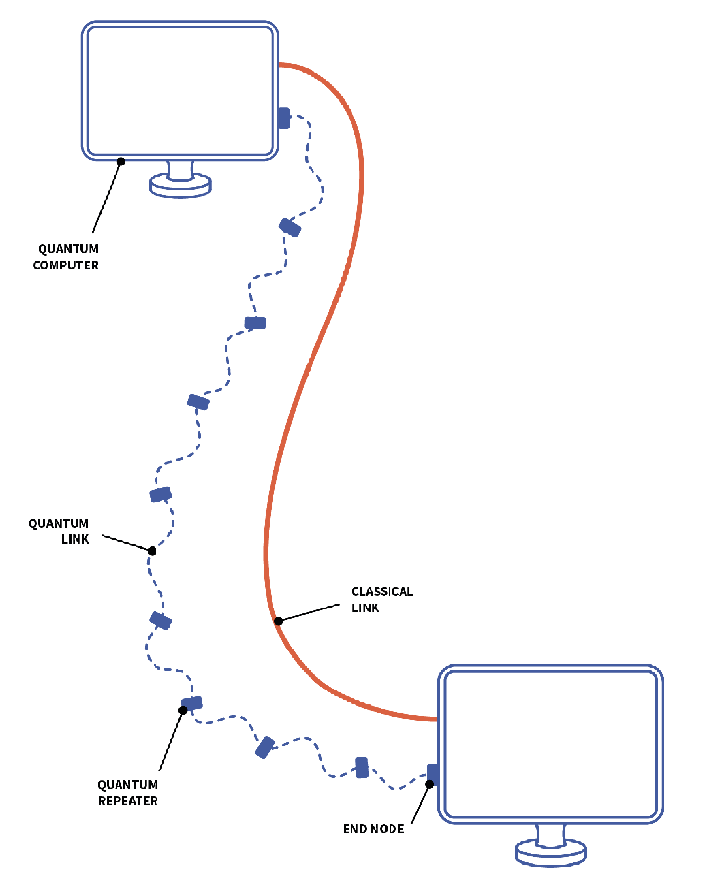
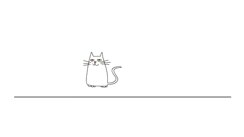
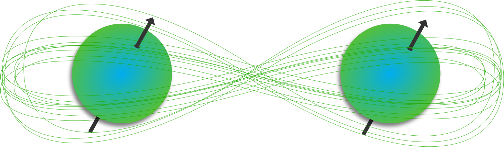

Hoe Quantum networking security gaat verbeteren
Een quantum computer is ondertussen bij velen al een bekende term, maar quantum networking is voor velen toch wel een onbekende term. Ik vind netwerken interessant en quantum netwerken kunnen mogelijk een nieuwe doorbraak zijn voor snelle netwerken en dit kan mogelijk ook de security enorm verbeteren. In dit onderwerp ga ik dan ook geen eigen quantum netwerk maken, zou wel interessant zijn, maar helaas heb ik thuis niet twee quantum computers op de zolder staan die ik hiervoor kan gebruiken en het zou waarschijnlijk langer duren om dit 100% te begrijpen en werkend te krijgen dan dit hele semester duurt. Ik wil dit dan ook meer theoretisch houden om zo een beeld te krijgen wat quantum netwerk inhoudt en waarom dit de security kan verbeteren.
Een quantum netwerk is anders dan een normaal netwerk. Het werkt alleen tussen quantum computers en er zijn behoorlijk wat quantum repeaters nodig om een grotere afstand te overbruggen.
Afbeelding 1 Quantum netwerk
Bij een quantum netwerk worden ook geen berichten verstuurd als 1 en 0, maar er worden Qbits gebruikt. De Qbits zijn verbonden via entanglement. Momenteel kunnen alleen quantum computers iets met dit netwerk doen. Normale computers of mobiele telefoons kunnen op dit netwerk niets doen. Om een quantum verbinding op te zetten is er momenteel nog wel een normaal netwerk nodig. Via het normale netwerk wordt de richting bepaald hoe de Qbits moeten gaan. Onderzoekers bij QuTech van de technische universiteit Delft hebben hier een klein netwerk werkend gekregen en willen voor het eind van 2020 een werkend netwerk hebben tussen Delft en Den Haag.
Entanglement is een natuurkundige verbinding tussen twee deeltjes (Fotonen). Deze deeltjes hebben een soort connectie met elkaar zonder dat ze ook maar in de buurt van elkaar hoeven te zijn, in theorie kan deze afstand gigantisch groot zijn en sommige spreken al over 20.000KM. De draairichting van deze deeltjes is een superstate, net als het voorbeeld van de Schrödingers kat.
Afbeelding 2 Schrödingers kat
Als de draairichting van de deeltjes wordt gemeten, dan is de entanglement verbroken en kan de draairichting als een 1 of 0 worden gerepresenteerd. Een entanglement verbinding is zeer gevoelig voor omgevingsinvloeden en deze kan zeer snel gebroken worden.
Afbeelding 3 Quantum entanglement
Een quantum netwerk werkt dus niet met de oude koper draden maar met entanglement. De snelheid van entanglement wordt vergeleken met de snelheid van het licht. waarschijnlijk kan een quantum netwerk dan ook op die snelheden werken. Een ander voordeel is dat de quantum deeltjes via dezelfde banen kunnen gaan als glasvezel, dit maakt het dan gemakkelijk omdat die kabels al overal liggen. De security hiervan wordt ook enorm veel beter. Daarover wordt meer verteld in het hoofdstuk security. Ik verwacht ook niet dat de gewone netwerken eruit gaan, quantum computers zijn geschikt voor bepaalde aspecten, maar niet voor bij mensen thuis. Daar zullen gewone netwerken goed blijven werken. Mocht er een nieuwe techniek komen waarmee normale computers met een quantum netwerk kunnen verbinden dan wordt het een ander verhaal, maar tot hoe het er nu uitziet is dat nog niet het geval.
Dat entanglement de eigenschap heeft dat het zeer gevoelig is voor omgevingsinvloeden, is niet zo zeer een probleem. Wetenschappers hebben al een manier gevonden om dit probleem te kunnen oplossen. Voor de security is het zelfs een voordeel. Omdat er maar een minimale invloed van buitenaf hoeft te zijn om de verbinding verbreken, zou iemand dit ook niet kunnen modificeren of kopiëren. Een ander voordeel is dat de Qbits eenmaal gelezen kunnen worden. Zou dit door een kwaadwillig iemand gelezen worden, dan wordt de hele verbinding verbroken. Het is een beetje te verkelijken met iemand die door een ruimte loopt met allemaal dunne breekbare glazen dominoblokken, er hoeft maar iets kleins te gebeuren en ze vallen allemaal om. Als dit in de praktijk zo daadwerkelijk uitpakt, dan zijn mogelijk de huidig bekende encryptie methodes niet meer nodig binnen een quantum netwerk.
QKD (Quantum Key Distribution) is een key distributie dat gemaakt is om een sleutel te delen tussen twee partijen net zoals het RSA algoritme. Quantum computers kunnen veel moeilijkere wiskundige problemen oplossen waardoor ze dit op een zodanige manier kunnen dat een derde partij geen enkele mogelijkheid heeft om informatie te kunnen verkrijgen over de sleutel. Er is ook een theoretisch protocol dat 'coin flipping' heet, dit protocol zou gebruikt kunnen worden om toch een veilige verbinding te kunnen opzetten tussen twee partijen die elkaar niet vertrouwen. Dit is een theoretisch protocol en tot op heden is dit nog niet mogelijk om te bereiken omdat het veel te complex in elkaar zit.
Ondanks het geweldige idee van quantum networking, zijn er nog verschillende problemen waar we mee te maken hebben. Momenteel is het grootste netwerk een netwerk tussen twee quantum computers, het is wetenschappers nog niet gelukt om een netwerk te maken met meerdere computers. Ook is de grootste overbrugging van het entanglement van de deeltjes nog niet groter geweest dan een paar centimeter.